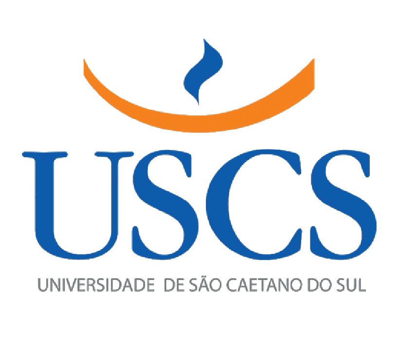

Dashboard
Bem-vindo ao painel principal da Universidade São Caetano do Sul!
Últimas Notícias
-
Matérias optativas
Participe das matérias optativas deste ano e ganhe créditos extras!
-
Abertura de Novos Cursos
Confira os novos cursos disponíveis a partir do próximo semestre.
-
Feira de Estágios
Não perca a feira de estágios, uma oportunidade para sua carreira!
-
Biblioteca Digital
Acesse a nova biblioteca digital com milhares de livros e artigos acadêmicos.
-
Blue lines eleito melhor album de trip hop de todos os tempos
Instituto MR declara o album da banda britânica como o melhor do mundo no genero.